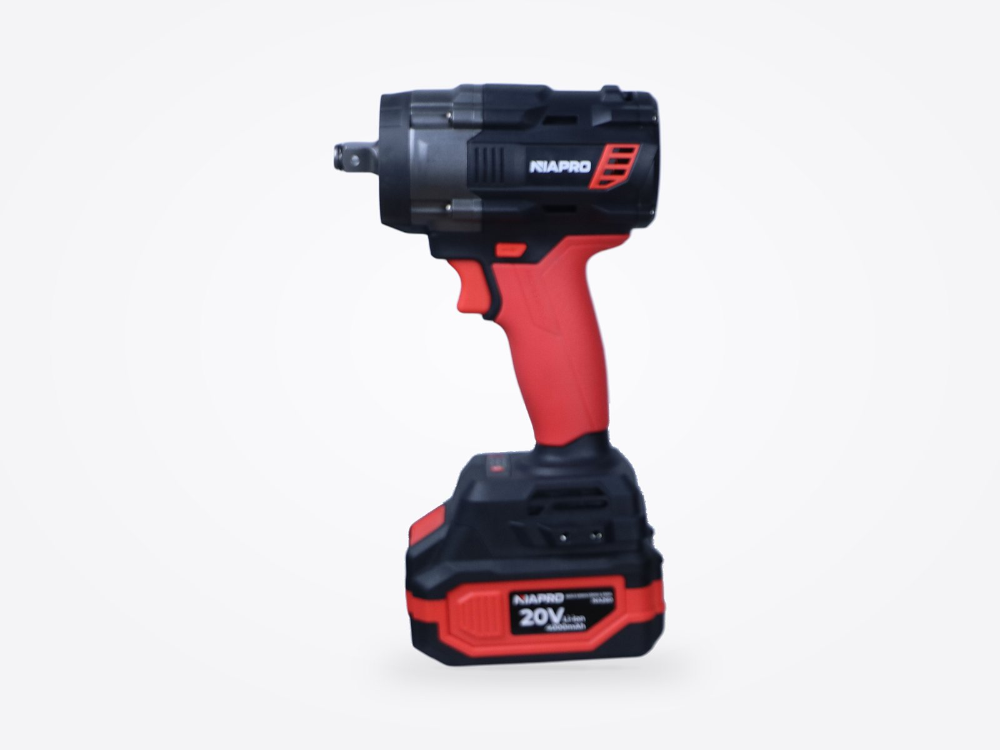

NIAPRO · 20V · Akülü
NA260
Akülü somun sıkma. 1/2" soket, 600 Nm maksimum tork, kömürsüz (brushless) motor, 2 × 4.0 Ah akü.

Açıklama
Akülü somun sıkma
1/2" soket, 600 Nm maksimum tork, kömürsüz (brushless) motor, 2 × 4.0 Ah akü.
Teknik değerler ASEL 2026 kataloğundan alınmıştır. Kataloğu indir (PDF) ›
Teknik özellikler
| Soket karesi | 1/2" |
| Maksimum tork | 600 Nm |
| Otomatik durdurma | Geri dönüşte otomatik durdurma fonksiyonu |
| Pil teknolojisi | 20V – 10 C pil |
| Motor tipi | Kömürsüz (Brushless) Motor – 5215 |
| Boşta devir hızı | 0–2200 / 2400 / 2600 r.p.m |
| Darbe sayısı | 0–2400 / 2600 / 2800 b.p.m |
| Akü | 2 × 4.0 Ah akü |
| Şarj cihazı | Masa tipi, VDE fişli, 2.0 A |
| Ağırlık | 2,2 kg |
| Aydınlatma | LED çalışma lambası |
| Akü durumu | Entegre akü seviye göstergesi |